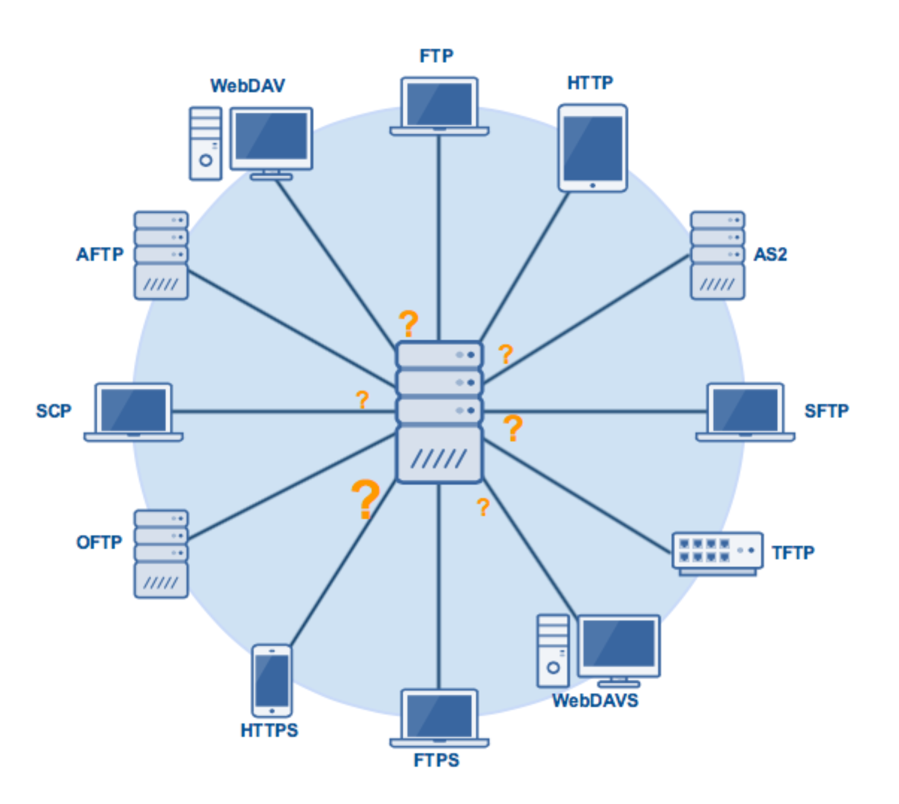

Both WebDAV and FTP have many similarities like facilitating file transfer. Yet FTP is the most widely used protocol for sending and receiving files over the web, WebDAV offer so much more. WebDAV is an extension to HTTP that allows both the reading and writing of documents on the web.
When connecting to the internet, HTTP lets us not only view webpages but also interact with them. Normally, with HTTP we have the ability to edit pages whether they are shared documents or are on a wiki but HTTP can’t edit pages that are read-only. Here is where WebDAV starts its job.[1] The WebDAV protocol enables a webserver to behave like a fileserver supporting collaborative authoring of web content.
In 1989 Tim Berners-Lee created the World Wide Web and in 1990 he designed the first web browser called WorldWideWeb, which could both view and edit web pages. As the web grew, the capability of editing became minimal.
Members of the World Wide Web Consortium worked together in 1996 to overcome that limitation. The meetings resulted in the formation of an IETF working group because the new effort would lead to extensions to HTTP.
In 2002 an extension for WebDAV was defined as the WebDAV group focused on distributed authoring. Versioning remained pending.
In 2007 WebDAV work concluded with an incremental update approved by IESG.
Users are just not able to exchange files; they can edit remotely from each other on the Internet.
WebDAV is in most operating systems, web servers, applications, and media types (GIF, JPEG, etc.).
With WebDAV it's possible to set permissions allowing certain people to edit files.
Versioning is still not offered.
WebDAV doesn't address security issues if you have to protect content through both file system and web server.
May require duplicate user management and authentication.
Here are some WebDAv features from the Techtarget's website:[2]
Locking (lock and unlock) Management - Prevents accidental overwriting of files by letting users "lock" a document while editing.
Management Of Properties - Keeps track of who created a document, when was a document created, who modified a document last, when was a document modified last, etc.
Namespace Management - Provides copy and move methods allowing applications to copy and move individual files. Also, it allows the creation of directories and files.
With DAV you get all the benefits of HTTP that FTP cannot provide. However, you still can get somehow similar benefits with other FTPs. It is a matter of taste and what you want the protocol to do. Here are some FTPs that you can choose from.
